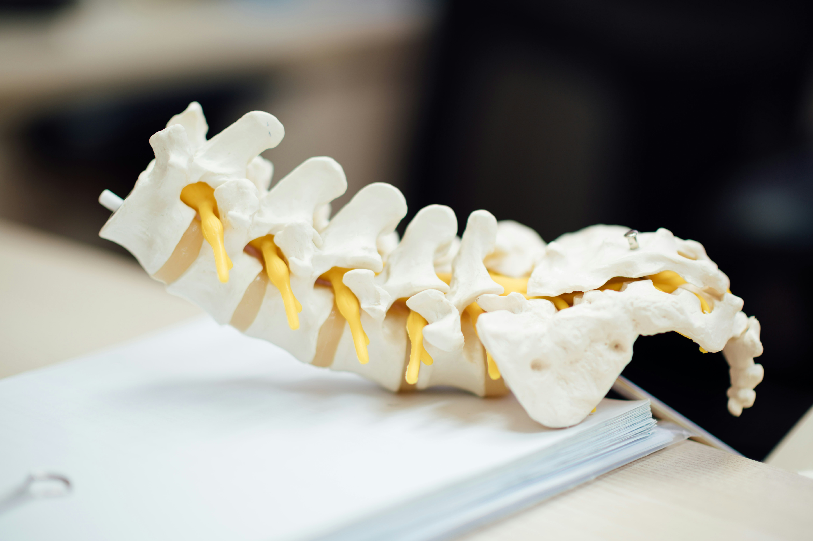
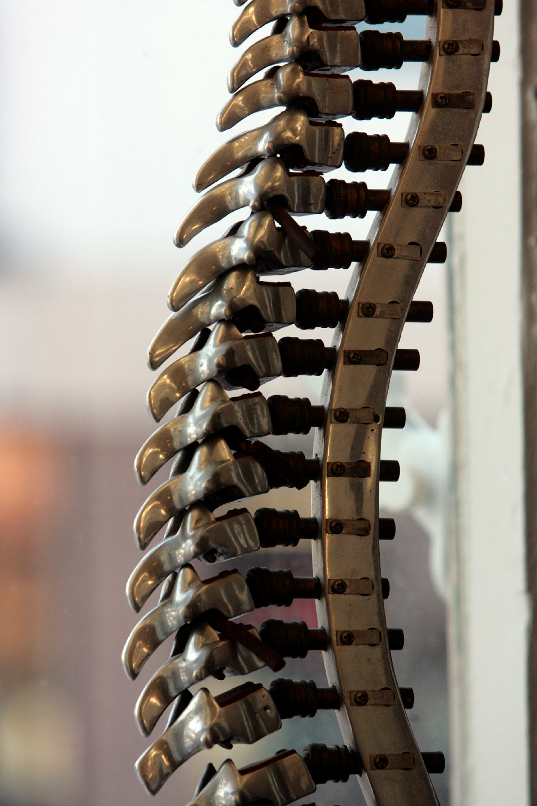
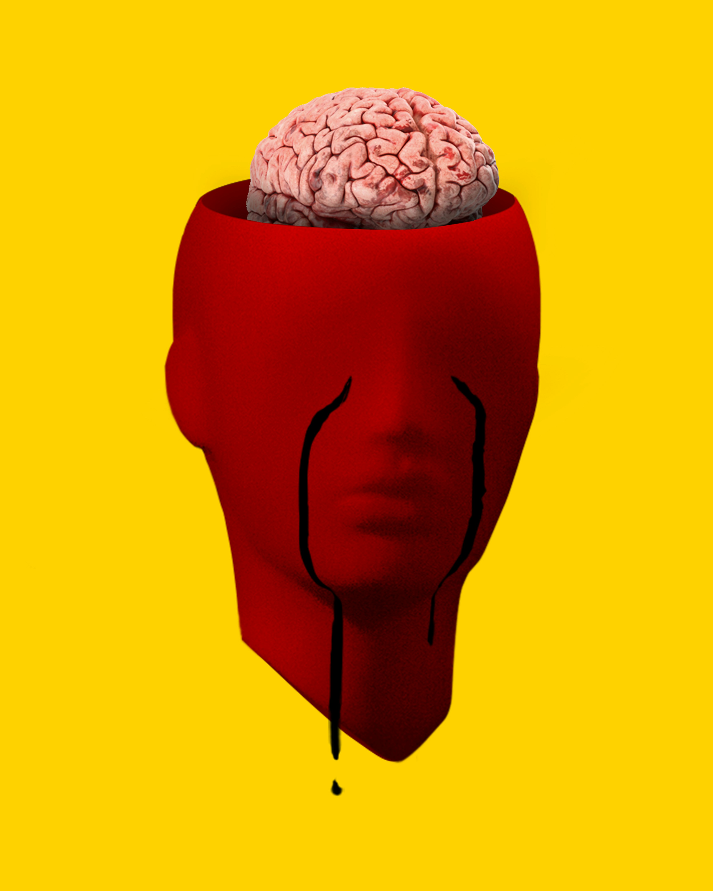

Brain Tumor Surgery
Expert treatment of benign and malignant brain tumors using advanced microsurgical techniques and neuro-navigation systems.
- Minimally invasive tumor removal
- Awake craniotomy for eloquent area tumors
- Image-guided surgical navigation
- Endoscopic brain tumor surgery
- Comprehensive post-operative care and rehabilitation

Spine Surgery
Comprehensive spinal care including disc herniation, spinal stenosis, spinal tumors, and spinal trauma management.
- Minimally invasive spine surgery (MISS)
- Cervical and lumbar disc replacement
- Spinal fusion procedures
- Scoliosis and deformity correction
- Spinal cord tumor surgery
- Vertebroplasty and kyphoplasty

Stroke & Cerebrovascular Surgery
Emergency and preventive care for stroke, aneurysms, and vascular malformations of the brain.
- Aneurysm clipping and coiling
- AVM (arteriovenous malformation) treatment
- Carotid endarterectomy
- Emergency stroke intervention
- Hemorrhage evacuation

Head Injury & Trauma Care
24/7 emergency neurosurgical care for traumatic brain injuries and skull fractures.
- Emergency craniotomy for head trauma
- Subdural and epidural hematoma evacuation
- Skull fracture repair
- Intracranial pressure monitoring
- Comprehensive ICU management

Pediatric Neurosurgery
Specialized care for children with neurological and spinal conditions.
- Hydrocephalus treatment (VP shunt)
- Congenital anomalies correction
- Pediatric brain tumor surgery
- Spina bifida repair
- Craniosynostosis surgery